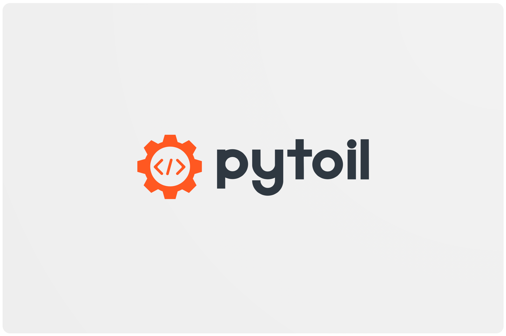

Home



toil
"Long, strenuous or fatiguing labour"
-
Source Code: https://github.com/FollowTheProcess/pytoil
-
Documentation: https://FollowTheProcess.github.io/pytoil/

What is it?¶
pytoil is a small, helpful CLI to take the toil out of software development!
pytoil is a handy tool that helps you stay on top of all your projects, remote or local. It's primarily aimed at python developers but you could easily use it to manage any project!
pytoil is:
- Easy to use ✅
- Easy to configure ✅
- Safe (it won't edit your repos at all) ✅
- Snappy (it's asynchronous from the ground up and as much as possible is done concurrently, clone all your repos in seconds!) 💨
- Useful! (I hope 😃)
Say goodbye to janky bash scripts 👋🏻
Background¶
Like many developers I suspect, I quickly became bored of typing repeated commands to manage my projects, create virtual environments, install packages, fire off cURL snippets to check if I had a certain repo etc.
So I wrote some shell functions to do some of this for me...
And these shell functions grew and grew and grew.
Until one day I saw that the file I kept these functions in was over 1000 lines of bash (a lot of printf's so it wasn't all logic but still). And 1000 lines of bash is waaaay too much!
And because I'd basically hacked it all together, it was very fragile. If a part of a function failed, it would just carry on and wreak havoc! I'd have to do rm -rf all_my_projects... I mean careful forensic investigation to fix it.
So I decided to make a robust CLI with the proper error handling and testability of python, and here it is! 🎉
Installation¶
As pytoil is a CLI program, I'd recommend installing with pipx.

You can always fall back to pip

pytoil will install everything it needs in python to work. However, it's full feature set can only be accessed if you have the following external dependencies:
- git
- conda (if you work with conda environments)
- A directory-aware editor e.g. VSCode etc. (if you want to use pytoil to automatically open your projects for you)
- poetry (if you want to create poetry environments)
- flit (if you want to create flit environments)
Quickstart¶
pytoil is super easy to get started with.
After you install pytoil, the first time you run it you'll get something like this.

If you say yes, pytoil will walk you through a few questions and fill out your config file with the values you enter. If you'd rather not do this interactively, just say no and it will instead put a default config file in the right place for you to edit later.
Once you've configured it properly, you can do things like...
See your local and remote projects¶

See which ones you have on GitHub, but not on your computer¶

Easily grab a project, regardless of where it is¶
This project is available on your local machine...

This one is on GitHub...

Create a new project and virtual environment in one go¶

(And include custom packages, see the docs)
And even do this from a cookiecutter template¶

And loads more!
pytoil's CLI is designed such that if you don't specify any arguments, it won't do anything! just show you the --help. This is called being a 'well behaved' unix command line tool.
This is true for any subcommand of pytoil so you won't accidentally break anything if you don't specify arguments 🎉
And if you get truly stuck, you can quickly open pytoil's documentation with:

Check out the docs for more 💥
Contributing¶
pytoil is an open source project and, as such, welcomes contributions of all kinds 😃
Your best bet is to check out the contributing guide in the docs!